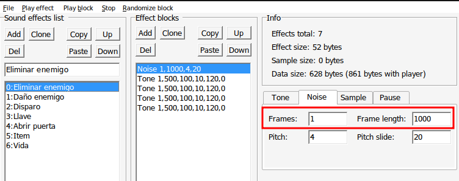
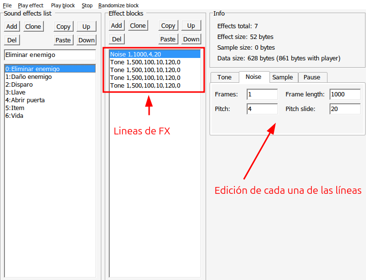
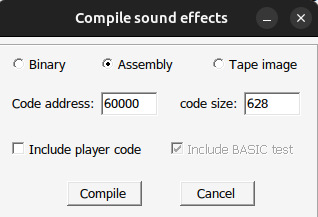
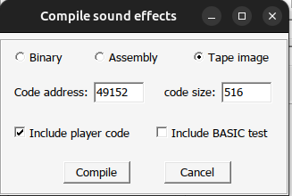

Sonido FX
Para personalizar los efectos de sonido debes utilizar la aplicación de shiru8bit BeepFX (http://shiru.untergrund.net/files/beepfx.zip)
ZX Game Maker necesita que definas 7 sonidos. Se reproducirán cuando en el juego sucedan cualquiera de las siguiente acciones:
- Eliminar enemigo
- Daño enemigo. Cuando la bala golpea al enemigo pero no le mata.
- Disparo
- Llave. Cuando el personaje recoge una llave.
- Abrir puerta
- Item. Cuando el personaje recoge un item.
- Vida. Cuando el personaje recoge un elemento que le recupera vida.
Editar los sonidos
En general siempre es recomendable hacer los sonidos cortos por que se ejecutan con el beeper y usan la CPU y en consecuencia se para el juego mientras se estan ejecutando, pero con el nuevo player de beeper hemos podido mitigar ese problema ya que este ejecuta una de las lineas del sonido y devuelve el control a la CPU.
Para que el nuevo reproductor de player pueda notarse más y que el juego se pare menos intenta hacer que cada una de las líneas que definen el sonido tengan una duración (Frames x Frame lenght) sea corto, si puede ser que no pase de 1000 incluso 500 es un buen valor.

Recuerda también que para usar ese nuevo player lo tienes que activar en la sección de configuración, exactamente es la opción newBeeperPlayer.
También recomiendo ir escuchando el sonido en el juego ya que al hacer este truqui, sonidos que os pareceran muy cortos en el BeepFX, en el juego realmente se escuchan bien.

Exportar para ZX Game Maker
Reproductor nuevo (@JuanAntonio1072)
Para exportar tus efectos de sonido para el ZX Spectrum Game Maker, sólo tendrás que ir al menu File > Compile. * Seleccionar Assembly * En Code address da igual la dirección que haya, no hace falta que lo toques. * Deseleccionar Include player code * Deseleccionar Include basic test * Pulsar Compile * Guardar el archivo en tu carpeta assets/fx con el nombre fx.asm * Pulsar la opción Build -> FX de ZX Spectrum Game Maker

Reproductor "antiguo" (Shiru8bit)
Para exportar tus efectos de sonido para el ZX Spectrum Game Maker, sólo tendrás que ir al menu File > Compile. * Seleccionar Tap image * En Code address poner 49152 * Seleccionar Include player code * Deseleccionar Include basic test * Pulsar Compile * Guardar el archivo en tu carpeta assets/fx con el nombre fx.tap

Solo con esto, al volver a ejecutar el generador de juego (make-game), ya se aplicarán tu sonidos.
Si esto lo ves complicado y quieres dejarlo para más adelante, ya tienes unos sonidos predeterminados.
Si decides usar estos sonidos predeterminados, es muy importante que en tu juego pongas la atribución al autor que es shiru8bit